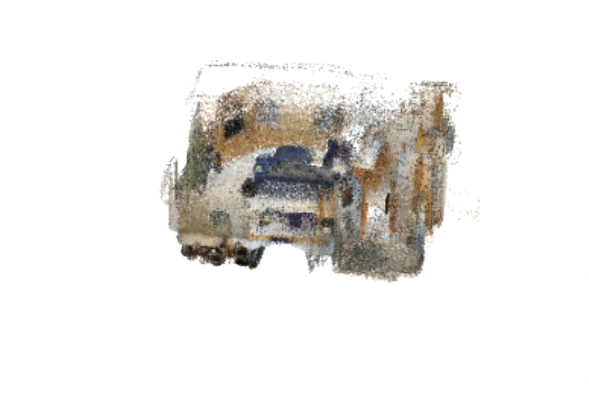
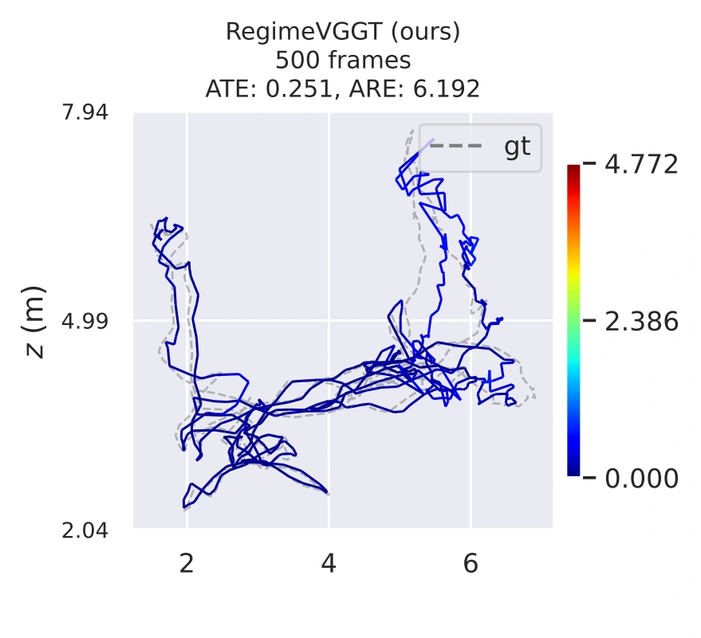
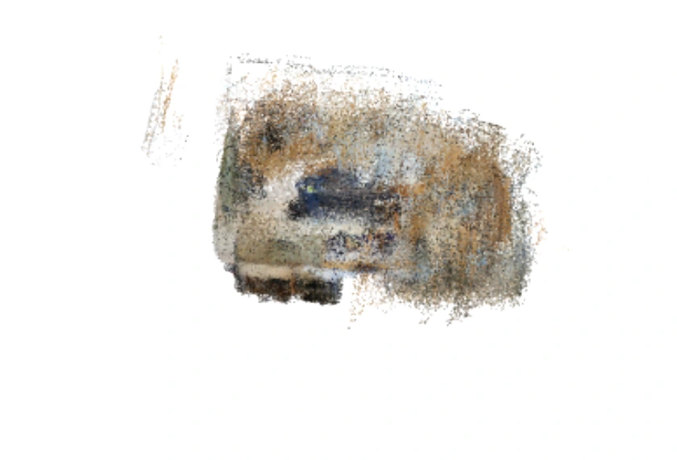
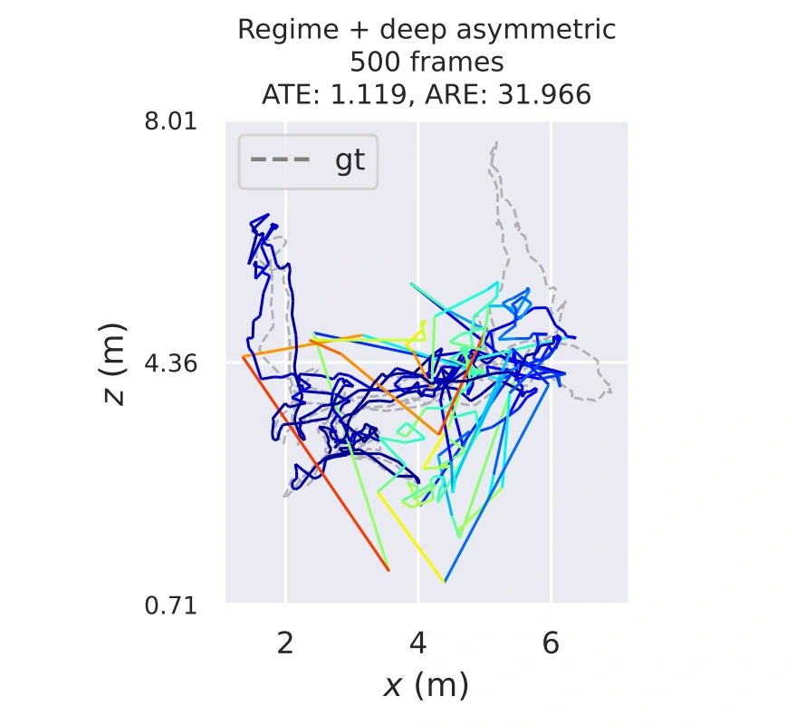
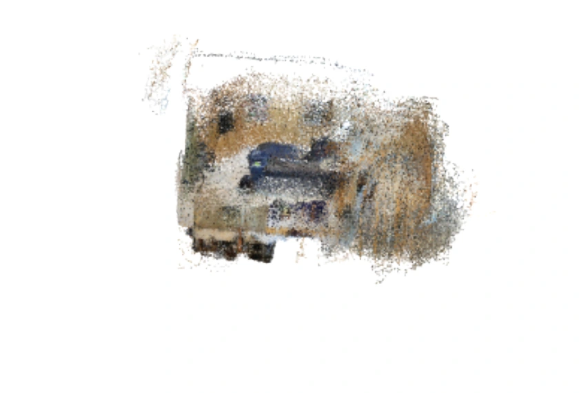

01Different layers, different roles
Where does a visual geometry transformer actually need cross-view computation? We study VGGT through attention spectra, feature probes, and causal interventions. The answer varies with depth, suggesting that compression should vary with it.
Shallow
Cross-view structure is still weak. Redundant computation can be compressed more aggressively.
Middle
Cross-view alignment takes shape. Conservative compression protects geometric reasoning.
Deep
Dense geometry is redundant, but cross-frame updates remain important for camera pose.
02Compress tokens. Preserve spatial structure.
RegimeVGGT uses a U-shaped compression policy: stronger in the shallow and deep regimes, gentler in the middle. Two mechanisms reduce attention computation along complementary axes, using the pretrained model without retraining.
Saliency-guided banded merging
Geometry- and edge-salient patches guide which tokens to preserve. Redundant source patches are merged, then dense tokens are restored through merge–unmerge for subsequent processing.
Selectively protected K/V downsampling
A phase-shifted spatial grid reduces patch keys and values while retaining a full-density reference frame and uncompressed camera/register tokens. Patch queries continue to update, including in the deep layers.
| Regime | Layers | Source-patch merge ratio | K/V sampling factor |
|---|---|---|---|
| Shallow | 1–10 | 0.99 | 1.5 |
| Middle | 11–18 | 0.50 | 1.3 |
| Deep | 19–24 | 0.99 | 1.7 |
Merge ratios apply to eligible source patches, not all tokens. Camera/register tokens and a reference frame remain protected.
03Scaling to 1,000 views
On ScanNet-50, RegimeVGGT processes 1,000 input frames in 71.5 seconds, compared with 477.3 seconds for the memory-optimized VGGT* baseline—a 6.68× speedup. Reconstruction CD changes from 0.463 to 0.465, while the reported trajectory error is lower.
| Method | Time ↓ | CD ↓ | ATE ↓ |
|---|---|---|---|
| VGGT* | 477.3 s | 0.463 | 0.117 |
| FastVGGT | 113.5 s | 0.464 | 0.111 |
| RegimeVGGT | 71.5 s | 0.465 | 0.092 |
Reported paper results. One NVIDIA H800 80 GB; input resolution 518 × 392. Lower is better for all three metrics. VGGT* is the memory-optimized baseline.
Latency and memory have different trade-offs: maximum peak memory is 51.8 GB for RegimeVGGT versus 45.3 GB for VGGT* in this setting.
04A plausible reconstruction can hide pose errors
What if only camera and register queries update inside the deep band? In the example below, the point cloud still retains recognizable room structure, but the camera trajectory deteriorates substantially. Evaluating dense geometry alone would miss this failure.
RegimeVGGT


Deep-asymmetric


This motivates retaining patch-query updates while selectively reducing K/V context. At 1,000 frames, all three methods in this qualitative example show substantial drift and visible reconstruction degradation.
Original three-method comparison
VGGT baseline

RegimeVGGT ours
Deep-asymmetric
Swipe to compare all three methods →
05Resources & citation
Read the complete paper for the method, experiments, and analysis. The RegimeVGGT repository provides the implementation.
BibTeX
@article{you2026regimevggt,
title={RegimeVGGT: Layer-Wise Spatially Preserving
Redundancy Removal for Visual Geometry Grounded Transformer},
author={You, Jinhao and Lyu, Shuo and Lyu, Zhuohang and
Li, Tanxuan and Zhao, Zibo and Hu, Jiaxiang and
Tang, Kai and Guo, Yichen},
journal={arXiv preprint arXiv:2606.18439},
year={2026}
}